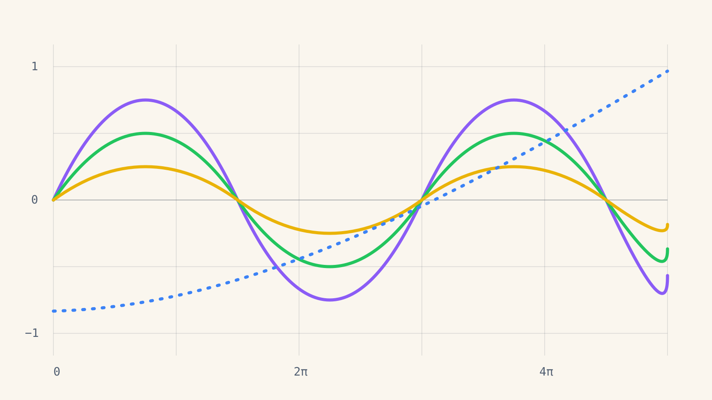

Plantilla · Catálogo
Una diapositiva de ejemplo por cada bloque, variante y animación.
Jerónimo RestrepoModo presentaciónTecla H: ayuda
Cómo leer este catálogo
<section class="diapositiva"> es una página.Un documento nuevo arranca sin animaciones. Este catálogo las trae activadas solo para mostrarlas.
uso <section class="diapositiva"> <p class="etiqueta">…</p> <h2>…</h2> … </section>
01
Portada, sección, índice, densidades, columnas, listas, citas.
Índice
uso <ol class="indice"> <li class="actual">…</li> <li>…</li> </ol>
Densidad normal
La densidad normal es la que se usa si no se indica nada. El cuerpo mide 36 unidades sobre un lienzo de 1920, que proyectado se lee sin esfuerzo desde el fondo de un salón.
Caben cómodos entre cinco y siete renglones de texto corrido, o un bloque y un par de frases. Si el contenido no entra, lo correcto es partirlo en dos diapositivas o pasar a densidad densa.
uso sin atributo, o data-densidad="normal"
Densidad amplia
Para una idea por diapositiva. El cuerpo sube a 48 unidades.
uso data-densidad="amplia" · la clase "centrada" centra el contenido en vertical
Densidad densa
La densidad densa baja el cuerpo a 28 unidades. Es para demostraciones largas, tablas grandes o material que el público va a leer después con calma.
Sigue siendo legible proyectado, pero exige más atención. Conviene acompañarla de revelado por pasos para no mostrar todo de golpe.
em.Un espacio métrico es un par \((X, d)\) donde \(d : X \times X \to \mathbb{R}\) cumple, para todo \(x, y, z \in X\):
La misma diapositiva en densidad normal necesitaría dos páginas.
uso data-densidad="densa"
Dos columnas
La clase columnas reparte el espacio en partes iguales. Con data-proporcion se cambia el reparto.
2-1, 1-2, 3-2data-cols="3" para tres columnasEsta columna tiene la clase medio, que centra su contenido en vertical.
uso <div class="columnas" data-proporcion="3-2"> <div>…</div> <div>…</div> </div>
Listas
uso <ul> y <ol> normales · color por ítem con class="c-morado"
Cita
La matemática es el arte de dar el mismo nombre a cosas distintas.
uso <blockquote class="cita"> <p>…</p> <footer>Autor · obra</footer> </blockquote>
Idea destacada
La curvatura total no depende de la forma, solo de la topología.
uso <p class="idea">… <span class="morado">…</span></p> · colores de texto: morado, verde, amarillo, azul
02
Definición, teorema, demostración, ejemplo, observación.
Definición y teorema
Para una superficie triangulada con \(V\) vértices, \(A\) aristas y \(C\) caras, \(\chi = V - A + C\).
Sea \(M\) una superficie compacta, orientable y sin borde, con curvatura gaussiana \(K\). Entonces
\[ \int_M K \, dA = 2\pi \, \chi(M). \]
uso <div class="bloque bloque--teorema" data-nombre="Gauss-Bonnet"> · fórmulas: \( … \) en línea, \[ … \] centrada
Variantes de resultado
Toda sucesión convergente en un espacio métrico es de Cauchy.
Un subconjunto cerrado de un espacio completo es completo.
\([0,1]\) con la métrica usual es completo.
El mismo bloque con data-color="verde" para forzar otro color.
Un rótulo propio con data-rotulo="Conjetura".
uso bloque--lema · bloque--proposicion · bloque--corolario comparten numeración con teorema
Demostración por pasos
Si \(n\) es impar, entonces \(n^2\) es impar.
Como \(n\) es impar, existe \(k \in \mathbb{Z}\) con \(n = 2k + 1\).
Entonces \(n^2 = (2k+1)^2 = 4k^2 + 4k + 1\).
Es decir, \(n^2 = 2(2k^2 + 2k) + 1\), que es de la forma \(2m + 1\).
Luego \(n^2\) es impar.
uso <div class="bloque bloque--demostracion"> <p data-paso>…</p> … </div> · el cuadrado final se pone solo
Ejemplo, observación, advertencia
La esfera tiene \(\chi = 2\), así que su curvatura total es \(4\pi\), sin importar cómo se deforme.
El toro tiene \(\chi = 0\): la curvatura positiva y la negativa se cancelan.
El teorema exige que la superficie no tenga borde; con borde aparece un término adicional.
uso bloque--ejemplo (verde) · bloque--observacion y bloque--advertencia (amarillo)
03
Resaltado, líneas por pasos, salida y pseudocódigo.
Código
import numpy as np
def curvatura_discreta(angulos):
"""Defecto angular en un vértice: 2π menos la suma de ángulos."""
return 2 * np.pi - np.sum(angulos)
defectos = [curvatura_discreta(a) for a in angulos_por_vertice]
print(f"Curvatura total: {sum(defectos):.4f}")
uso <pre data-numeros data-resaltar="4-5"><code class="language-python">…</code></pre> · la sangría del HTML se quita sola
Código con explicación
def busqueda_binaria(a, x):
izq, der = 0, len(a) - 1
while izq <= der:
medio = (izq + der) // 2
if a[medio] == x:
return medio
if a[medio] < x:
izq = medio + 1
else:
der = medio - 1
return -1
El intervalo de búsqueda empieza siendo todo el arreglo.
Se mira el elemento del medio; si es el buscado, se termina.
Si no, se descarta la mitad que no puede contenerlo.
Si el intervalo se vacía, el valor no está.
uso <p data-paso data-lineas="4-6">…</p> resalta esas líneas del código de la diapositiva cuando le toca
Código con salida
from fractions import Fraction
def armonico(n):
return sum(Fraction(1, k) for k in range(1, n + 1))
for n in (1, 2, 5, 10):
print(n, armonico(n))
1 1
2 3/2
5 137/60
10 7381/2520
uso <pre class="salida"><code>…</code></pre> junto al código, dentro de "columnas"
Pseudocódigo
Ordenar-Por-Inserción(A)
para i = 2 hasta A.longitud
clave = A[i]
j = i − 1 // A[1..i−1] ya está ordenado
mientras j > 0 y A[j] > clave
A[j + 1] = A[j]
j = j − 1
A[j + 1] = clave
uso <pre class="pseudocodigo"> con <b> para palabras clave, <i> para comentarios y <span class="nombre">
04
Gráficos, tablas, cifras, comparaciones, diagramas, imágenes.
Gráfico con texto
Con cuatro series o menos, cada una toma un color de marca en orden: morado, verde, amarillo, azul.
Los datos de este ejemplo son ilustrativos.
uso <div class="columnas crece estirar" data-proporcion="2-1"> <div class="grafico" data-grafico="…"></div> <div>texto</div>
Tabla
| Algoritmo | Mejor caso | Caso promedio | Peor caso | Memoria |
|---|---|---|---|---|
| Inserción | \(O(n)\) | \(O(n^2)\) | \(O(n^2)\) | \(O(1)\) |
| Mezcla | \(O(n \log n)\) | \(O(n \log n)\) | \(O(n \log n)\) | \(O(n)\) |
| Rápido | \(O(n \log n)\) | \(O(n \log n)\) | \(O(n^2)\) | \(O(\log n)\) |
| Montículo | \(O(n \log n)\) | \(O(n \log n)\) | \(O(n \log n)\) | \(O(1)\) |
uso <table> normal · <tr class="destacada"> o <td class="destacada"> resaltan · class="num" alinea a la derecha
Cifra destacada
uso <div class="cifra c-morado"> <span class="cifra__numero">98%</span> <span class="cifra__texto">…</span> </div>
Comparación
uso <div class="comparacion"> <div class="c-morado"> <h3>…</h3> <ul>…</ul> </div> … </div>
Línea de tiempo
Curvatura intrínseca de una superficie.
Versión con borde del teorema.
Introduce el flujo de Ricci.
Flujo de Ricci combinatorio .
uso <ol class="linea-tiempo"> <li class="c-morado"> <span class="fecha">1827</span> <h3>…</h3> <p>…</p> </li>
Diagrama
uso <svg class="diagrama" viewBox="…"> · cajas: class="caja f-morado" · líneas: class="trazo t-verde" · texto chico: class="mono"
Imagen con pie

Las figuras de Python salen así usando el estilo de matplotlib incluido.
plt.style.use(
"herramientas/jero.mplstyle")
plt.savefig("fig.svg")
uso <figure> <img src="img/…" alt="…"> <figcaption><b>Figura 1.</b> …</figcaption> </figure>
Imagen completa. Clase sangre: sin márgenes ni número de página.
05
Algoritmos paso a paso, exploradores, tarjetas, preguntas.
Algoritmo paso a paso · arreglo
Algoritmo paso a paso · grafo
Explorador con deslizador
uso <div data-explorador="onda"></div> + Interactivos.explorador("onda", { parametros, x, y, curvas, formula, lectura })
Tarjetas de repaso
uso <div class="tarjetas"> <div class="tarjeta"> <div class="frente">…</div> <div class="reverso">…</div> </div> … </div>
Pregunta de opción múltiple
¿Cuál es la curvatura total de una superficie con dos agujeros (género 2)?
Para género \(g\), \(\chi = 2 - 2g\). Con \(g = 2\), \(\chi = -2\) y la curvatura total es \(2\pi \cdot (-2) = -4\pi\).
uso <div class="pregunta"> <p class="enunciado"> · <li data-correcta> marca la respuesta · <p class="explicacion">
Pestañas y desplegables
Las pestañas muestran una parte a la vez.
\[ e^{i\pi} + 1 = 0 \]
import cmath
print(cmath.exp(1j * cmath.pi) + 1)Usá la fórmula de Euler.
\(e^{i\pi} = \cos\pi + i\sin\pi = -1\).
uso <div class="pestanas"> <section data-titulo="Idea">…</section> … · <details class="desplegable"><summary>…
06
Opcionales. Tecla A: ninguna, sutil, completa.
Revelado por pasos
--orden se escalonan.uso data-paso · data-paso="3" · data-efecto="aparecer | subir | resaltar | contar | dibujar" · style="--orden: 2"
Atenuar lo anterior
uso <section class="diapositiva" data-atenuar> · lo ya mostrado baja de intensidad
Dibujar y mover
uso <path data-paso data-efecto="dibujar"> · <g data-paso data-mover-a="330,-130"> (unidades del lienzo de 1920)
Movimiento entre diapositivas · 1 de 2
\[ \int_M K \, dA = 2\pi \, \chi(M) \]
Avanzá: la fórmula viaja a la diapositiva siguiente.
Movimiento entre diapositivas · 2 de 2
\[ \int_M K \, dA = 2\pi \, \chi(M) \]
uso el mismo data-enlace="nombre" en un elemento de dos diapositivas seguidas
Transiciones
Cada diapositiva puede elegir cómo entra. Las secciones de este catálogo usan acercar.
uso data-transicion="fundido | deslizar | acercar | corte" en la <section>
07
Vista del orador, PDF, archivo único, prueba de proyector.
Vista del orador
uso <aside class="notas">…</aside> dentro de cada diapositiva · tecla O
Exportar
Una diapositiva por página, con todos los pasos visibles y sin animación.
python herramientas/exportar.py catalogoUn solo .html con fuentes, librerías e imágenes adentro. Abre en cualquier computador, sin conexión.
Prueba de proyector
| Color | Base | Fuerte, como texto | Tinte |
|---|---|---|---|
| Morado | Se lee con claridad | ||
| Verde | Se lee con claridad | ||
| Amarillo | Se lee con claridad | ||
| Azul | Se lee con claridad |
Izquierda: fondo de la plantilla. Derecha: blanco puro. Si se ven iguales, el proyector está lavando el beige.
Este renglón mide 20 unidades, el mínimo permitido. Tiene que leerse desde la última fila.
si falla cambiar solo --fondo en core/css/tokens.css (por ejemplo a #f6f1e7)
Referencias
Fin del catálogo
¿Preguntas?
jerofax.github.ioMedellín, Colombia